Guest lectures, mentorship sessions, induction talks and pitch rooms across Kanpur. Open to any college or student community, on-site in India or remote.
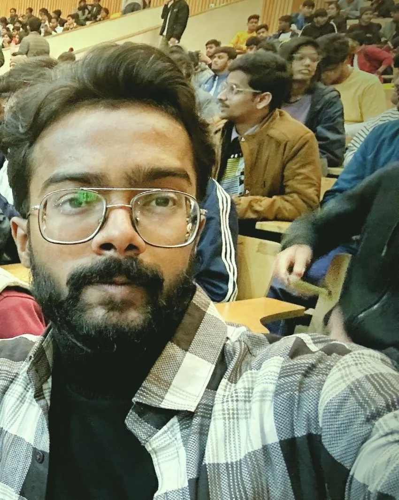
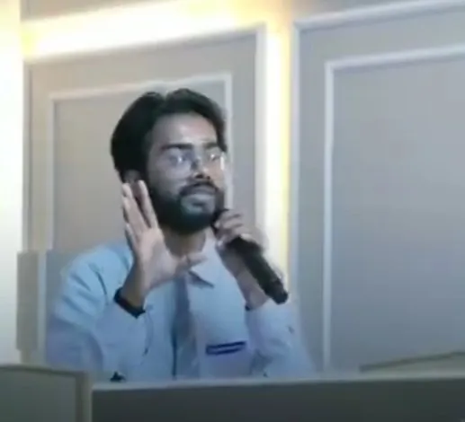
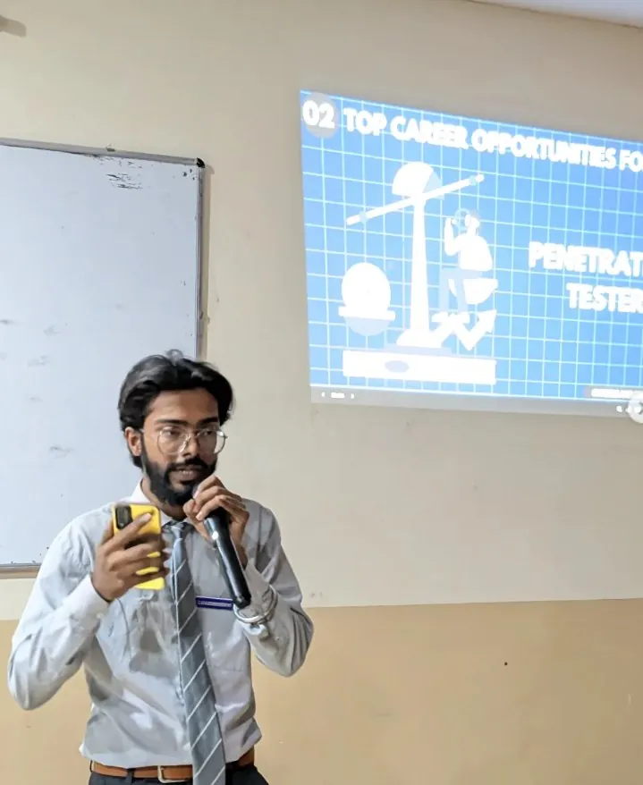
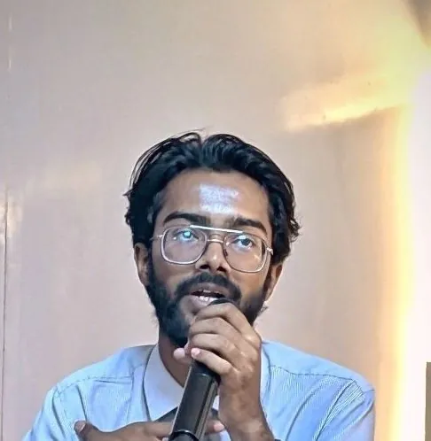
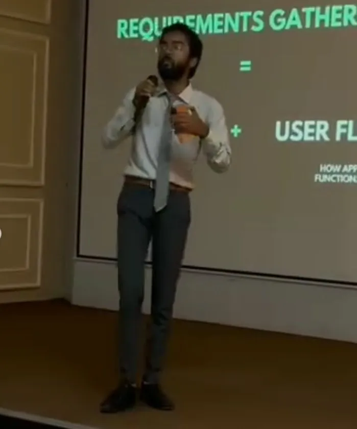
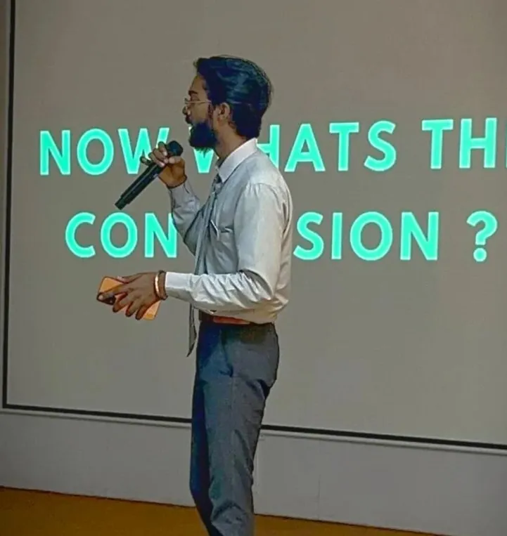
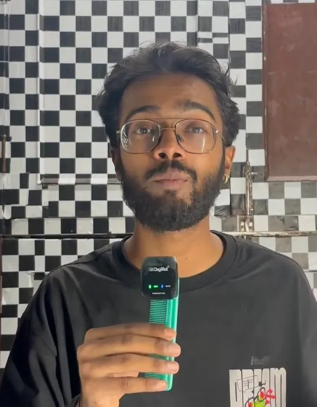
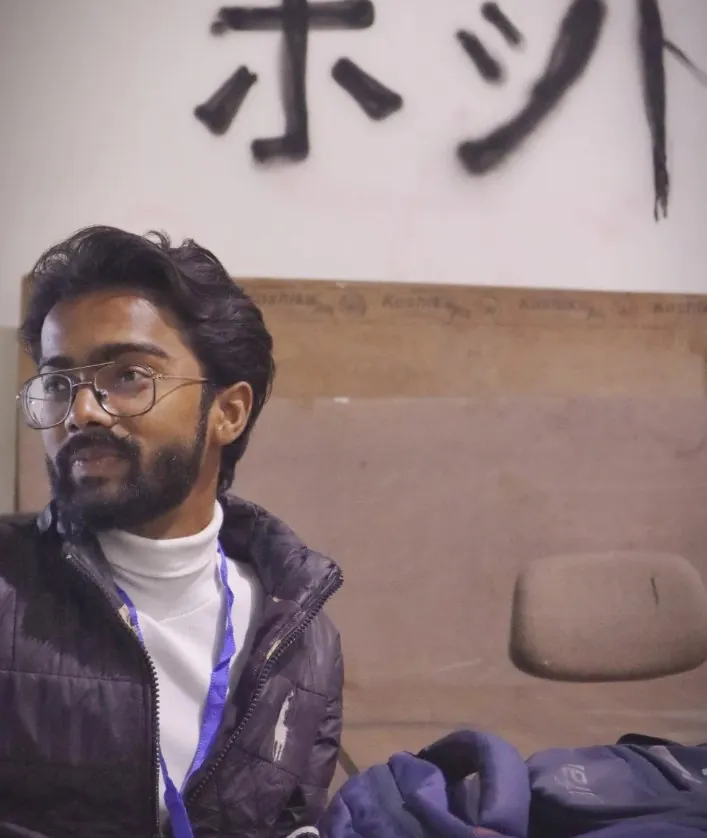
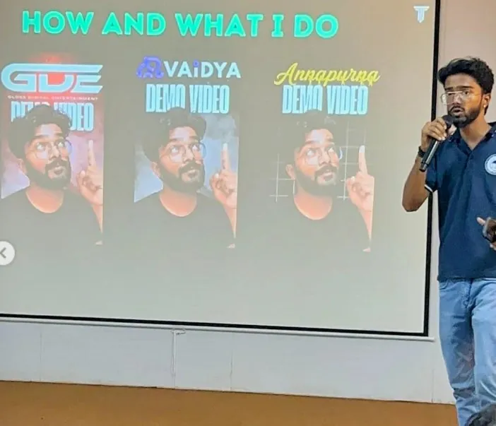
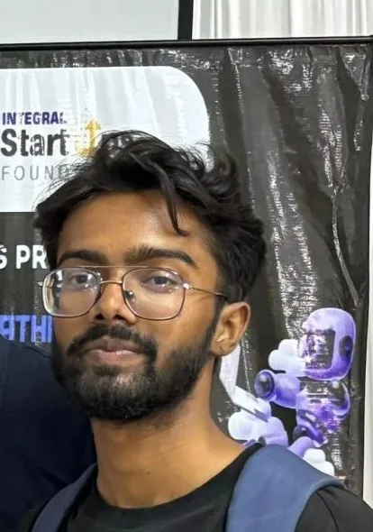
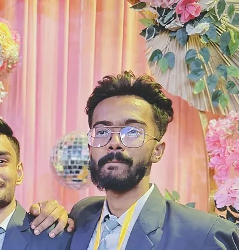
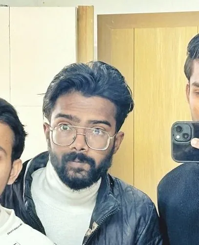
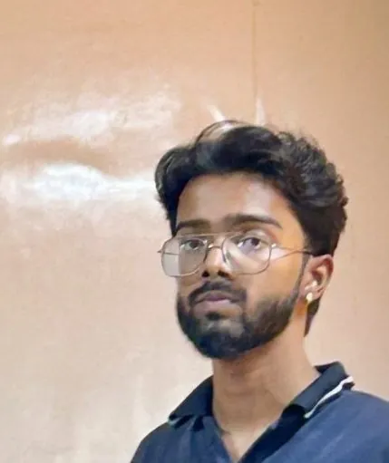
Mentor and speaker to 100+ first-years: a three-year roadmap from foundations and AI tools to hackathons, internships and placements.
How AI enters every stage of the software lifecycle, with a live showcase of the Changethon-winning project.
Argued the 'against' side at the Computer Application Department, VSICS Kanpur.